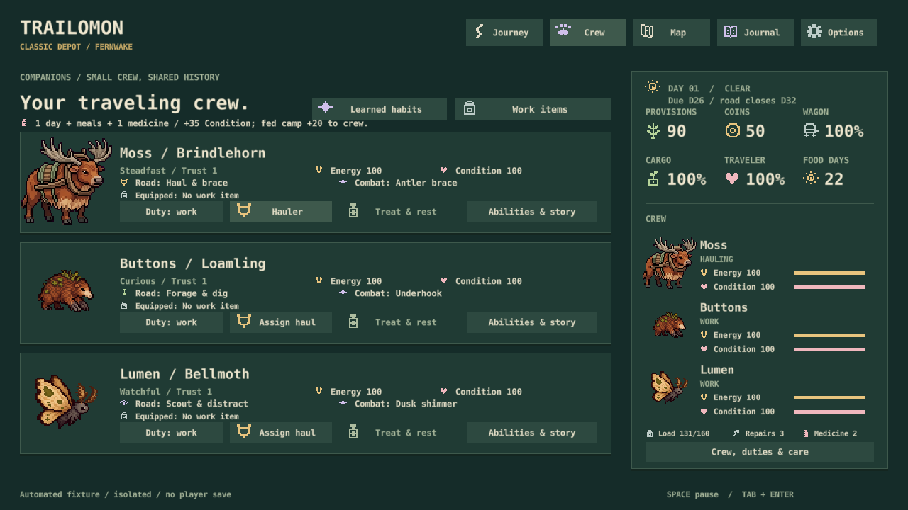
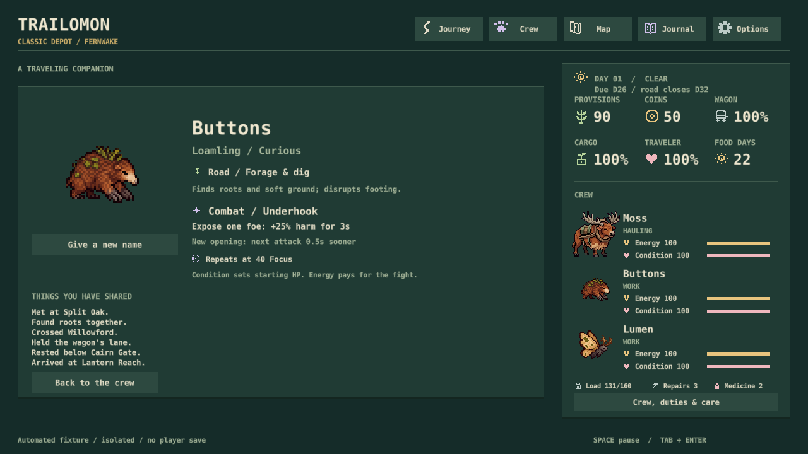

Fresh integration audit · November 2, 2026
The pieces fit. Discovery needs a stronger payoff.
Keep Oregon Trail's expedition, creatures worth getting attached to, and Astronarch's party preparation. Connect them more tightly before adding more systems.
Where we are now
| Influence | Already working | Main gap |
|---|---|---|
| Oregon Trail The expedition | Supplies, pace, weather, crossings, route choices, injury and recovery all affect the same trip. | Exploring costs delivery time. The player needs useful information and a worthwhile discovery. |
| Pokémon Discovery and attachment | Wildlife, six species, invitations, names, field observations and retained companions. | A full crew can make helping a new creature end without a new crew option. |
| Astronarch Preparing a battle plan | Independent attacks, repeating abilities, passives, positioning, gear and a wagon to defend. | Two road opponent templates and three items provide a narrow range of tests for those builds. |
The best existing connection: battle damage creates travel decisions. The best missing connection is discovery → future crew choice → a new plan for the road.
The latest two full rendered journeys delivered on days 26 and 24, with two searches each. A prepared trio showed shields, openings and interruptions in a 16-second simulated guardian fight. The solo attempt was much harsher. These are developer walkthroughs, not human fun ratings or measured playtime shares. Evidence and limits.
Clarity improved now
Road and Combat abilities are separated. Full kit details sit behind Abilities & story. Camp links directly to crew treatment. Playback is distinct from travel pace, and the deadline stays visible. No new art or balance changes.

Ability details and verification

154 simulation tests plus native save/UI checks pass. All six kits and old-rule descriptions checked. Seven actual rendered screens were inspected, including the crew-to-ability transition and the six-memory layout. No full journey rerun was needed because gameplay rules are unchanged.
Open integration decisions
I1 was superseded by the owner's four-companion and uncapped-collection direction on November 2. Its original scope is preserved below as history.
I1 — superseded scope (history)
I1Let an earned invitation survive a full crew
Start with Cindercoil: after helping it and earning its invitation, accept a depot rendezvous if the wagon's three places are occupied. It becomes a future crew option at the expedition ending. Seeing tracks alone earns nothing; the active crew stays capped at three.
Evidence: the last walkthrough spent medicine helping Cindercoil, then could not invite it because the crew was full.
Cost: one small system PR, saved invitation/ending rules and duplicate/decline tests. Recommendation: YES, first.
I2Use learned threat notes to prepare the crew
Extend the existing route reports with compact observed combat behavior and habitat clues. Mark what is observed, reported or unknown. Start with our two road threats; leave the deeper wilderness uncertain. No guaranteed encounter forecast or automatic best-team recommendation.
Evidence: current reports advise about travel and gear but explicitly leave encounters unreported. Our party tools become useful only after a fight has already appeared.
Cost: one knowledge/UI PR using the existing guide and reports. No new menu or time cost. Recommendation: YES.
I3Make the two road fights test different plans
Separate food raiders from territorial guardians mechanically: an interceptable supply rush versus a shielding defender and interruptible caller. Use the existing species, original abilities and peaceful exits. Keep fight frequency and deadlines unchanged for the first test.
Evidence: both current road encounters share the raider/caller behavior foundation. Different names and HP do not yet produce much opponent variety.
Cost: one larger combat PR with solo/pair/trio and expedition checks. No battle XP or extra grind. Recommendation: YES, with I2 after the approved S32 pairing.
Already approved, or still on another review
S32 symbiosis, S33 a local adaptation, S34 one food-web slice, S35 migration and S36 roster authoring stay approved. They need implementation, not another vote. Six species are implemented; 300 remains the expanded-game target.
Keep legacy combat internally for saves. Trust still has no gameplay effect; removing its number is the existing unanswered A3. Discovery-default A2, D4/D5 and E1/E2 remain on their original pages. No new XP, type chart, evolution, crafting or hunting system is proposed here.
Fresh reference sources and scope
Oregon Trail: weighted the 1985 Apple II model most heavily: coupled pace, health, weather, progress and crossing risk. Later editions are secondary. MECC manual, pp. 8–10, 35–36; 5th Edition publisher guide.
Pokémon: exploration, collection and trainer challenges give discoveries something to do. Nintendo's Red description.
Astronarch: unique heroes, items, positioning and route/enemy variety make preparation consequential. Developer's description.
Current code audited at 4a486fe; previous journey evidence remains valid for unchanged gameplay. Earlier identity percentages and old-combat command shares are historical, not measurements of this build. Physical input, sound and real-time feel still need S10 verification.